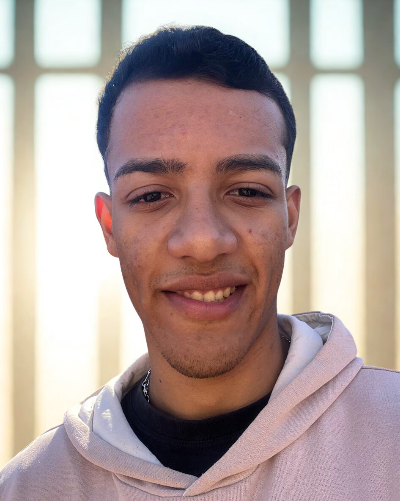

Formação aplicada
Conhecimentos da graduação transformados em decisões, planejamento e construção de uma proposta completa.
O Bem-Feito nasceu no ambiente acadêmico a partir de uma ideia simples: tornar mais fácil encontrar instituições, compreender suas necessidades e descobrir formas reais de contribuir. Ao longo da graduação, essa ideia amadureceu e se transformou em um projeto que busca unir informação, tecnologia e solidariedade de maneira clara, acessível e responsável.
O Bem-Feito surgiu no segundo período do curso de Análise e Desenvolvimento de Sistemas, inicialmente como uma proposta acadêmica desenvolvida em grupo. A ideia nasceu da percepção de que informações importantes sobre instituições nem sempre estão reunidas de forma simples, organizada e acessível.
Ao longo da graduação, a proposta amadureceu e ganhou uma nova dimensão. Retomado como Projeto Final, o Bem-Feito passou a ter identidade própria, objetivos mais definidos e uma estrutura preparada para continuar evoluindo.
A vontade de ajudar nem sempre vem acompanhada das informações necessárias. Encontrar uma instituição, descobrir como entrar em contato e entender o que ela realmente precisa pode exigir buscas em diferentes lugares.
Informações dispersas. Endereços, contatos e necessidades podem estar espalhados entre diferentes canais.
Pouca visibilidade. Instituições menores nem sempre conseguem tornar suas informações facilmente acessíveis.
Uma ponte entre os dois lados. O Bem-Feito reúne essas informações para facilitar o encontro entre quem deseja ajudar e as instituições.
Mais do que divulgar instituições, o objetivo é facilitar conexões conscientes e bem informadas.
O Bem-Feito integra o Projeto Final do curso de Análise e Desenvolvimento de Sistemas da FASF e representa a oportunidade de transformar conhecimentos construídos durante a graduação em uma proposta concreta.
Sua evolução reúne pesquisa, planejamento, experiência do usuário e organização da informação em torno de um objetivo comum: desenvolver uma solução coerente com um contexto real e capaz de continuar amadurecendo além da etapa acadêmica.
Conhecimentos da graduação transformados em decisões, planejamento e construção de uma proposta completa.
Cada etapa permite experimentar, avaliar escolhas e desenvolver soluções para necessidades identificadas no projeto.
O conhecimento acadêmico é direcionado para uma proposta que busca facilitar conexões entre pessoas e instituições.
O Bem-Feito começou no segundo período da graduação como uma construção coletiva. Cinco estudantes participaram da etapa inicial que deu origem à proposta e ajudou a estabelecer suas primeiras ideias.
Com o passar do tempo, o projeto seguiu novos caminhos. Em sua etapa atual, Bryan retomou a proposta e passou a conduzir individualmente sua evolução como Projeto Final, preservando sua origem e ampliando o que havia sido construído inicialmente.

Participou da criação inicial do Bem-Feito e posteriormente retomou a proposta como seu Projeto Final. Na etapa atual, é responsável pelo planejamento, desenvolvimento e evolução do projeto, preservando sua origem e ampliando a proposta construída inicialmente.
A primeira versão do Bem-Feito foi desenvolvida coletivamente durante o segundo período da graduação. Esses integrantes fizeram parte da etapa que deu origem ao projeto.
Desde sua evolução para o Projeto Final, algumas escolhas passaram a orientar a forma como o Bem-Feito é pensado. Elas ajudam a manter o projeto coerente com seu propósito e com as pessoas que poderão utilizá-lo.
Conheça o caminho pensado pelo Bem-Feito para transformar informação em conexão e facilitar novas formas de ajudar.